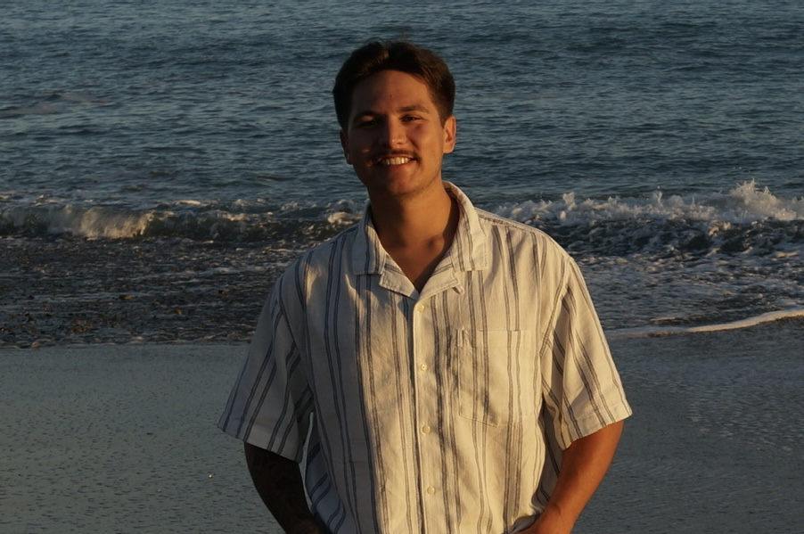

Short bio: Hello everyone! My name is Noa Nelson I am currently a graduate pursuing my Masters degree in Computer Science! I am originally from Orange County, California and moved over to the Virginia Beach area after graduating from Virginia Tech. I got a software development job working for the US Navy and decided to pursue a masters! One thing about me is that I love to learn! I love learning just about everything from history, other cultures, languages, tech, you name it. I enjoy reading whenever I have time to do so. I love working out and am currently trying to find an outdoor hobby to get into outside of work and school. Thinking I might pickup surfing.. why not! Over the last year or so, I have gained a crazy interest in data analytics with the recent growth in Artificial Intelligence. It is definitely crazy to see just how things have changed in the last couple of years in the tech industry as well as other sectors with the subsequent rise of AI. I am taking this course to gain a bit of understanding of this phenomena and open my eyes to all things data. I am looking forward to the content we will cover in this course and I hope you guys are just as excited as I am!